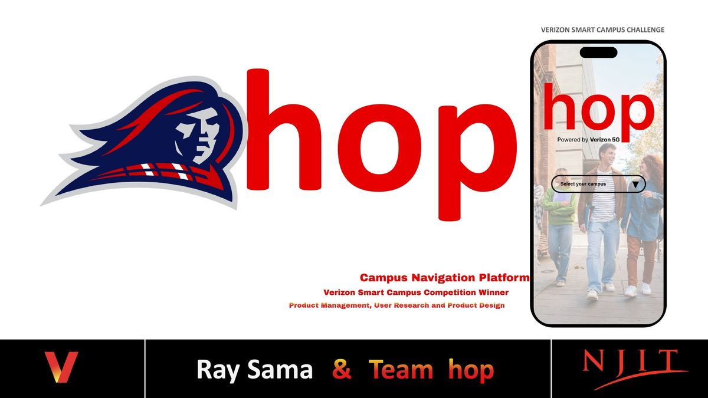
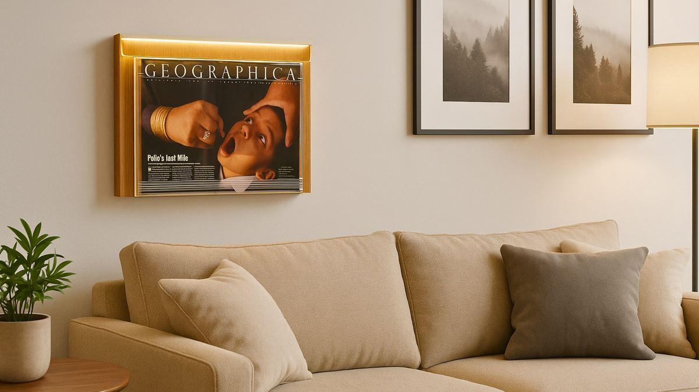
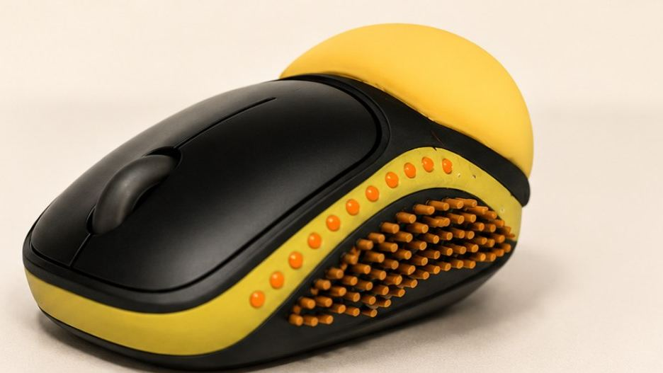
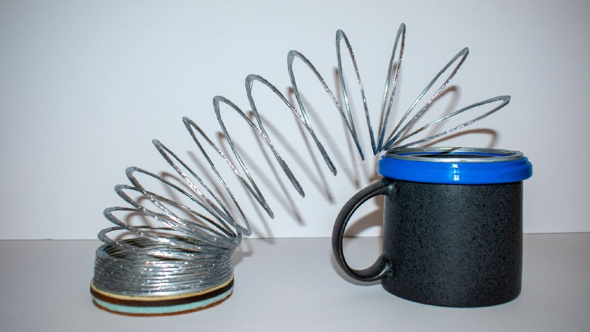
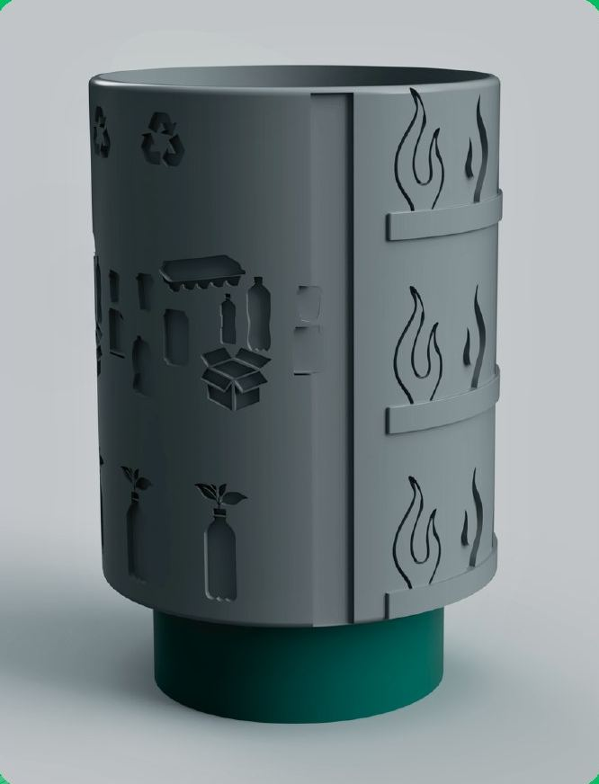
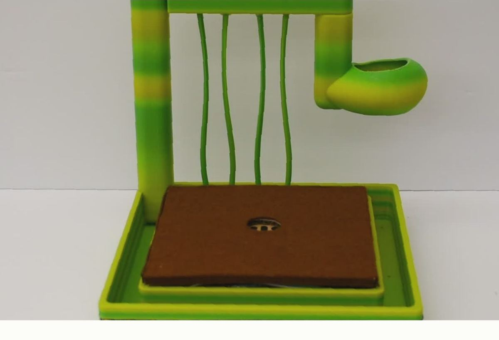
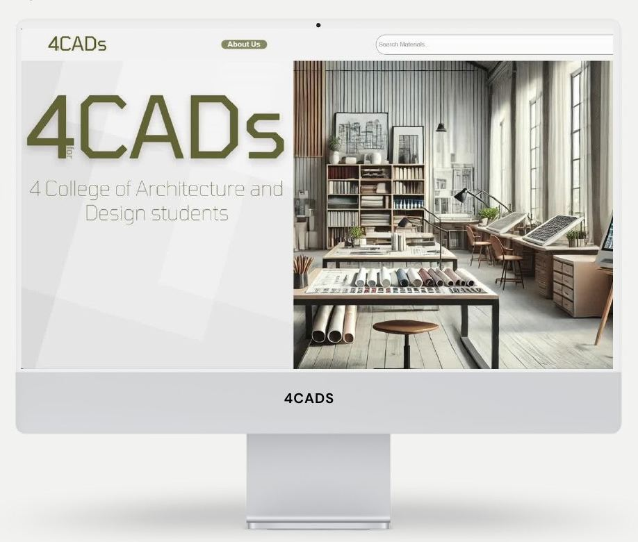
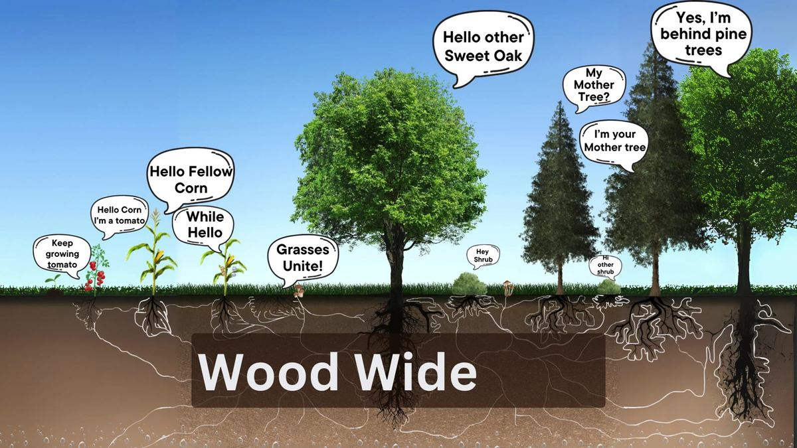
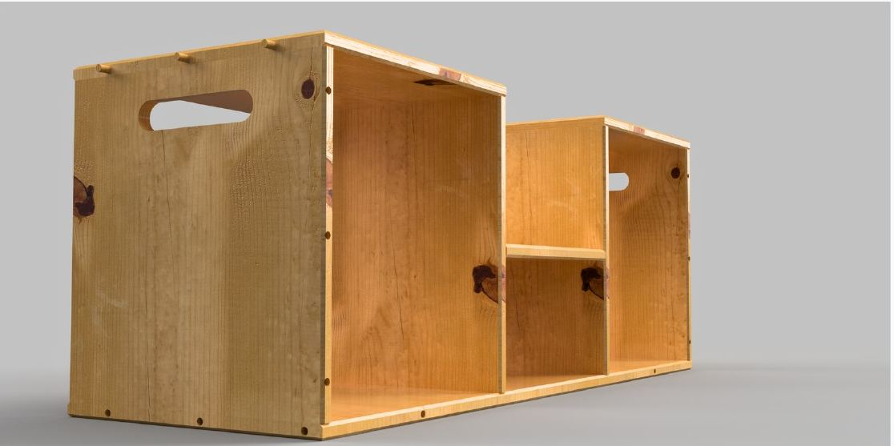
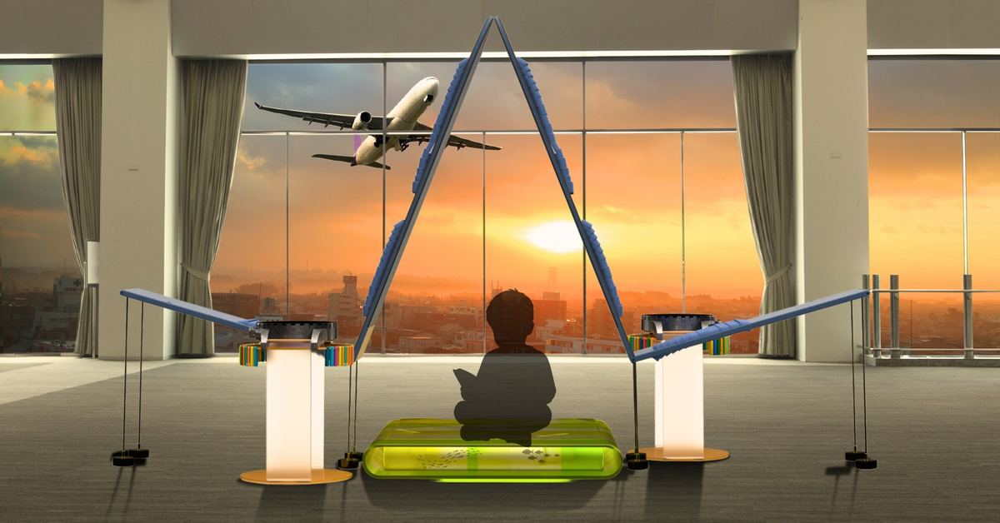

01
Latent Ocean
Teaching variational autoencoders as a packing problem you can play with
An interactive web explainer that turns a core generative-AI idea into an ocean you can rearrange. Presented at NCHC 2026.
Read the case studyHuman-Computer Interaction · NJIT Albert Dorman Honors College
I design and build interactive experiences that make hard ideas, like how generative AI works, feel intuitive. Before HCI I spent two years in Industrial Design, so I prototype for hands as well as screens, and I test with real people whenever I can.
Co-authored a research poster with Dr. Kieran Murphy on Latent Ocean, which reframes variational autoencoders for newcomers.
Second place, 2026.
HOP finished in the top 3 of 33 teams (198 participants), 2026.
Three case studies to start with.
Teaching variational autoencoders as a packing problem you can play with
An interactive web explainer that turns a core generative-AI idea into an ocean you can rearrange. Presented at NCHC 2026.
Read the case study
Campus navigation for the last hundred feet: the right door, floor and room
A smart-campus navigation service I led from survey research to a ProtoPie prototype. Picked as one of 3 winners out of 33 teams in Verizon’s Smart Campus Competition.
Read the case study
A lit wall display that lets magazines be seen instead of stacked
A houseware product taken from opportunity research to a working lit model. Two rounds of user testing changed how it’s loaded and how it signals use.
Read the case studyIndustrial design, physical computing, ed tech and motion.

A teardown-to-prototype mouse redesign with tactile side bristles and a squeezable stress-relief cushion.

A spring-loaded coaster for the brief “the joy of friction.” It rises with your mug when you lift it and settles back down when you put it back.

A webcam, an image classifier and a servo-driven rotating chute. ML, Arduino and fabrication in one working product.

A 3D-printed lamp inspired by sprouting plants, with a capacitive touch sensor and programmable LEDs.

A team-built educational website I led, organizing material properties, uses and sustainability by beginner, intermediate and advanced levels.

A short motion piece that turns an underground fungal network into a story you can follow in seconds.

An object that “secures something,” designed through three rounds of constraints and full-scale appearance models.

Four first-year projects: a color-coded chess set for kids, a watch turned into airport furniture, a healing space and a drawing portfolio.
I’m a third-year Human-Computer Interaction student in NJIT’s Albert Dorman Honors College, with a minor in Industrial Design (expected May 2028). I care about how people learn, and I want to build the tools that help them do it: on the web now, and in game engines, AR and VR next.
My work tends to sit between design intent and technical execution. I do the user research, then build high-fidelity, working prototypes myself, often with AI-assisted development, so ideas can be tested instead of just described.
Open to product design, UX and research internships.
I’d love to hear about internships, research or anything you’re building for learners.